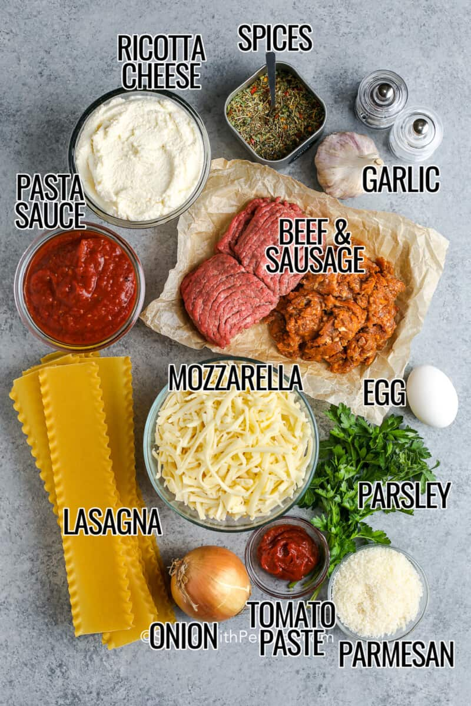
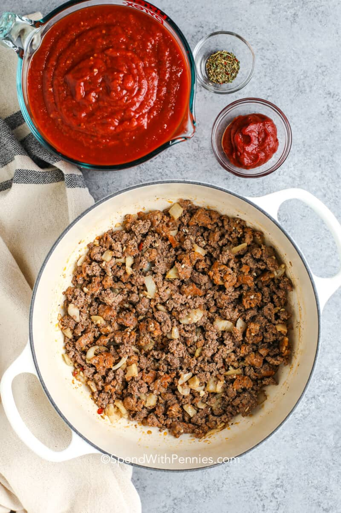
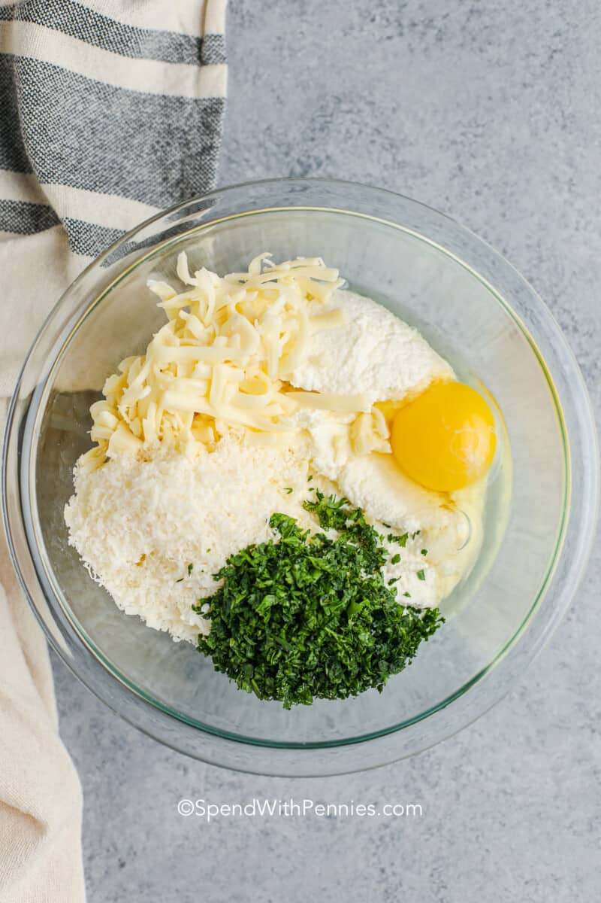

Lasagna
You will need the following:

- Pasta sauce
- Lasagna pasta
- Mozzarella
- Yellow onion
- Tomatoe Sauce
- Ricotta Cheese
- Spices
- Egg
- Parsley
- Parmesan
- garlic
- Beef & sausage
Ingredient Information
- Cheese Filling: For this classic lasagna recipe, the filling contains ricotta and parmesan with seasonings and a couple of tablespoons of parsley. No ricotta? No problem, cottage cheese works just fine in this recipe!
- Meat: I use both Italian sausage and ground beef for great flavor. If using all beef, add a ¼ teaspoon of fennel seeds and some Italian seasoning to the meat mixture for flavor.
- Sauce: To keep this sauce quick, I use pasta sauce or marinara sauce (it’s easy to make from scratch with crushed tomatoes and canned tomatoes if you’d prefer).


How to make Lasagna
Homemade lasagna may have a few steps, but each step is easy - and I assure you it's worth the time; the perfect Italian meal! This is a really easy lasagna recipe
- Boil Pasta: Cook in a large pot of salted water per the recipe below
- Prepare meat sauce: Cook sausage and beef with onion and garlic. Drain well, add hte pasta sauce & simmer it for a few minutes to thicken
- Combine cheese mixture: Stir the cheese mixture together in a bowl
- Layer & Bake: Layer the meat sauce and cheese misture with lasagna noodles and bake until browned and bubbly
How to Layer Lasagna
- Spread about a cup of meat sauce into a 9x13 pan. Add a layer of noodles
- Top of the noodles with some of the ricotta cheese mixture. Repeat the layers, ending with a layer of noodles and sauce
- Cover with foil and bake. Remove foil, top with mozzarella and parmasan, and bake for another 15 minutes
Once you hve prepared the meat sauce and the cheese mixture, you're ready to layer. This is the order of layers:
This layer will start at the bottom of the pan
- Sauce - noodles - cheese
- Sauce - noodles - cheese
- Sauce - noodles - cheese
- noodles - sauce (bake) - cheese
How long to bake
Bake this lasagna recipe for a total of one hour. To get a perfect browned cheese topping you'll need to bake it in two stages
- Layer and cover it tightly with aluminum foil to retain the moisture.
- Once cooked, and heated through, remove the foil, top with cheese, and return to the oven for an additional 15 minutes, or until the top is browned and the lasagna is bubbling